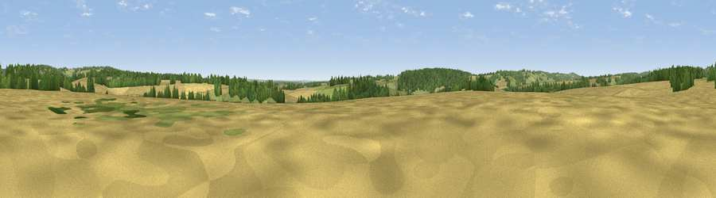

Doiley Hill
#33258 in England · top 54% of its area beats it · near Hurstbourne TarrantWhere it is
The exact computed spot (SU 40104 53968). Click the marker for map links.
The view, rendered

A 360° render of this exact spot computed from the terrain model, tree cover and land cover — summer colours, afternoon light, calibrated against photographs of famous viewpoints. Real trees, hedges and buildings will differ in detail.
The panorama
Grey silhouette: terrain skyline in each direction (720 bearings, Earth curvature and refraction included). Dashed green: skyline with trees (+15 m) and buildings (+8 m) as obstacles. Blue strip: how far the ground is visible on each bearing.
Where the view opens
Wedge length = distance to the farthest visible ground on that bearing (vegetation-aware). Rings at 10, 25 and 50 km.
What fills the view
55% cropland · 24% woodland · 21% grassland
Angular shares of the visible panorama (visual magnitude), not map area. Landscape diversity 0.44 (0–1 Shannon).
Key numbers
More beautiful places nearby
The staircase of upgrades: each row has a higher view potential than everything closer. Driving times are estimates from straight-line distance, calibrated against real road routing — check an actual route before setting out.
| Place | Direction | Drive | Score |
|---|---|---|---|
| Viewpoint near Stoke | SSW · 2 km | ~6 min | 45.8 |
| Stoke Hill | SSW · 3 km | ~7 min | 48.2 |
| Viewpoint near Upton | W · 4 km | ~9 min | 50.1 |
| Viewpoint near Old Burghclere | ENE · 5 km | ~11 min | 57.3 |
| Viewpoint near Old Burghclere | ENE · 5 km | ~12 min | 67.5 |
| Viewpoint near Old Burghclere | NE · 6 km | ~13 min | 68.7 |
| Viewpoint near East End | N · 6 km | ~13 min | 69.4 |
| Beacon Hill | ENE · 7 km | ~14 min | 76.7 |
51.28344, -1.42636 · source: osm peak · position refined by local search. Computed location — check access rights before visiting.